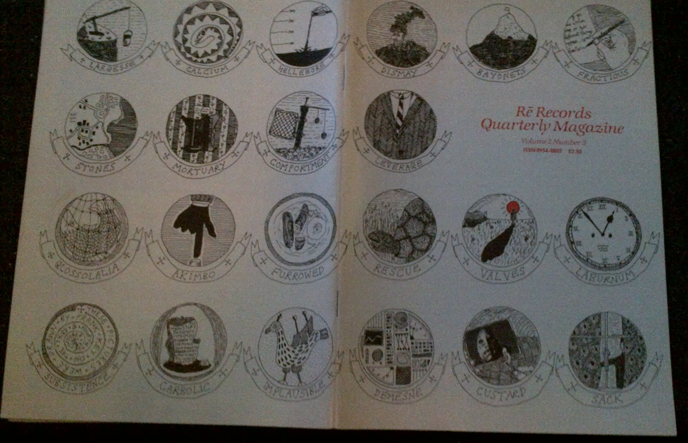

Friday, August the 31th, 2012
back to: title, date or indexes
The first sighting of the Hooting Yard “Implausible” emblem, on the back of the cover of the Rē Records Quarterly Magazine Volume 2 Number 3. The emblem in the bottom left corner tells us that the pictures were drawn by Mr Key on the third and fourth of October 1988. Click once (or possibly twice) for enormousness.
